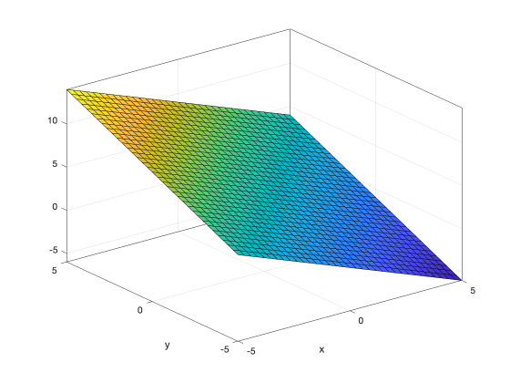

Vectors and Spaces
Motivation
Linear equations and protecting information
Recall:
- Fundamental Tenet V: Error-correction requires restricting possible messages
- One way to enforce such restrictions is linear equations
Let us remind ourselves of the connection via an example: Consider a vector of 3 bits $(a, b, c)$ received from a transmitter. Suppose there is some small chance that one of these bits were decoded incorrectly. Can we determine if an error occurred? The answer is no.
Now, suppose the transmitter guarantees that $a + b + c$ will add up to an even number, that is $a\oplus b \oplus c =0$ in $\mathbb F_2$. Are we able to detect errors?
For more powerful error-correction and -detection, we will enforce more restrictions, and thus more equations. These equations will be represented in terms of vectors and matrices, which are studied in linear algebra. Hence, the systematic study of error-correction relies on linear algebra.
Linear algebra and its applications

Linear algebra is the study of (linear) equations and operations. It is foundational to many elements of mathematics, science, and engineering.
- In the abstract sense, linear algebra describes the theory of vectors and operations involving them.
- In the practical sense, linear algebra concerns the computations involving vectors, including solving linear equations and analyzing vectors and matrices.
Some exciting areas that require a deep foundation in linear algebra:
- Machine learning
- Data science
- Robotics
- Computer Vision, and processing of images and signals
In addition to protecting information, which is our main focus, linear algebra connects to the study of information in other ways, including the study of linear time-invariant systems and representation of signals as a combination of simpler components (principal component analysis).
Linear algebra over fields
For error correction the algebra is performed over finite sets, e.g., \(\{0, 1\}\), bytes, etc. But in other applications, real or complex fields are more common. Generally, we can do linear algebra over any field, finite or infinite. The basic principles are the same though, regardless of the field, and viewing them from the finite field point of view will help us understand the foundational ideas of linear algebra better. We will start with algebra over real numbers, also known as Euclidean space
- Easier to get intuition
- Useful in many applications
- Very few concepts depend on the underlying field
- We will see examples from finite fields along the way
In the next section, our focus will return to finite fields.
Introduction to Linear Algebra
Linear Equations
What is a linear equation? Equations without products or powers greater than $1$ of the variables (no $xy$, $x^2$). More specifically, a linear equation is an equation of the form
\[a_1 x_1 + a_2 x_2 +\dotsm + a_n x_n = a_0,\]where $a_i$ are numbers (constants) and are called coefficients, and $x_i$ are variables, i.e., they can take different values. Notice that there are no terms of the form $x_1^2$ or $x_1x_2$, making the equation linear. Here’s an example:
\[3 x + 5 y = 2,\]where the coefficients are 3, 5, 2 and the variables are $x$ and $y$.
If variables are viewed as coordinates, a linear equation describes a line or plane in two or more dimensions:
 |
|
$$-x + 2y = 1$$ |
$$x-y+z-4=0 $$ |
Reminder: equations and geometry
Since we will deal with geometric representations below, let’s remind ourselves how lines and planes are represented.
- A line in two dimensions is represented by an equation of the form
\begin{equation} a x + b y + c = 0,\qquad a,b,c\in \mathbb R.\label{eq:line}\end{equation}
If $a\neq 0$, then we can write this equation (with different $a,b$) as
\begin{equation} y = a x + b,\qquad a,b\in \mathbb R.\label{eq:line-can}\end{equation}
For example, the line $y = \frac x2 -1 \iff 2y-x +1 = 0$ is given in the graph below.
Plot the line represented by $2x+y = 1.$
- A plain in three dimensions is represented by an equation of the form \begin{equation} a x + b y + c z + d = 0,\qquad a,b,c,d\in \mathbb R.\label{eq:plane}\end{equation} If $a,b\neq 0$, then we can write the plane (with different $a,b,c$) as \begin{equation} z = a x + b y + c,\qquad a,b,c\in \mathbb R.\label{eq:plane-can}\end{equation}
- A line in three dimensions is the intersection of two planes and can be written as a system containing two equations of the form \eqref{eq:plane}.
Vectors
A vector is:
- An ordered sequence of numbers, usually arranged in a column
- A line with a given length (aka magnitude) and direction, but no particular starting point
For example,
\[v = \begin{pmatrix}1\\2\\3\end{pmatrix}\]is a vector. We might also write a vector as a row,
\[v = (1,2,3).\]In this section, we alternate between the column and row representations as convenient, that is, both notations represent the same object. Later, when we deal with matrices, we’ll be more careful! The terms column vector and row vector are used to distinguish the arrangement if necessary.
The number of elements in a vector is called its dimension. For example, $v$ is a 3-dimensional vector.
Geometric representation, magnitude and direction
We can represent vectors geometrically by interpreting their elements as coordinates in a coordinate system in the Euclidean space. We assume that the origin is the starting point of the vector and the end point is the point whose coordinates are given by the elements of the vector. So there is correspondence between vectors and points in the space. But note that the vector can be moved in the space. The geometric representation of the vectors
\[v_1 = \begin{pmatrix}2\\3\end{pmatrix},\qquad v_2 = \begin{pmatrix}3\\-1\end{pmatrix}\]are given, one starting at the origin and the other starting at $\begin{pmatrix}1\\4\end{pmatrix}$.
For vectors in Euclidean space, we can define “magnitude” and “direction”. Magnitude is a measure of length or size. Direction describes the geometry or angle of the vector. For a vector $v$, the magnitude is shown by $\|v\|$.
In 2D Cartesian coordinates, the vector would correspond to the hypotenuse of a right triangle. The magnitude is the length of the hypotenuse, and the direction is given by its angle relative to the $x$ axis:
\[v = \begin{pmatrix}a\\b\end{pmatrix},\qquad \|v\| = \sqrt{a^2+b^2},\qquad \alpha = \tan^{-1}\frac ba.\]The magnitude can be found in a similar way for larger than 2 dimensions, e.g. as $ \sqrt{a^2+b^2+c^2}$ for $(a,b,c)$.
Operations on Vectors
Addition
Definition: The sum of two vectors $(u_1 , u_2 , \cdots , u_n )$ and $(v_1 , v_2 , \cdots , v_n )$ is $(u_1 + v_1 , u_2 + v_2 , \cdots , u_n + v_n)$.
Examples:
- $(2,3) + (3,-2) = (5,1)$. (The geometric representation is given in the figure.)
- $(-1,0,1) + (-2,2,0) = (-3, 2, 1)$.
Scalar Multiplication
We can also multiply vectors by numbers.
- The result is a scaled version of the vector.
- In the context of linear algebra, numbers are called scalars.
Definition: The product of a scalar $a$ and a vector $v = (v_1 , v_2 , \cdots , v_n )$ is $(av_1, av_2, \cdots, av_n)$.
Example: $2(3,2) = (6, 4)$
The zero vector
If we multiply any vector by the scalar 0, we get a vector all of whose elements are 0. This vector is represented by $\mathbf{0}$. It also has the property that adding it to any vector $v$ yields $v$ back: $v+\mathbf{0}= v$. The $\mathbf 0$ vector is specially important when dealing with spaces and linear transformations discussed below.
Linear Transformations
Linear algebra also concerns itself with linear transformations. An operation is linear if it satisfies the following properties:
- Scaling: $T(ax) = aT(x)$, for any number number $a$ and vector $x$
- Additivity: $ T(x + y) = T(x) + T(y)$ for any vectors $x,y$
This definition can be extended to any context in which multiplication by a number and addition are defined:
- Expected value is linear: $E[aX] = aE[X], E[X+Y] = E[X] + E[Y]$
- Other examples we will see: Matrix-vector multiplication, Fourier transform, linear filters
- Find $T((3,5,1))$.
- Verify that $T((3,5,1))+T((1,2,-1)) = T((3,5,1)+(1,2,-1))$.
- Prove that $T$ is linear.
- Find $T(1,-3)$.
- Prove or disprove the linearity of $T$.
Vector Spaces
Linear algebra defines three kinds of objects:
- Vector: the elementary object involved in linear algebra; for instance, a pair of coordinates $(x,y)$.
- Vector space: a collection of vectors that satisfies certain properties.
- Linear transformations: a mapping from one vector space to another that satisfies linearity.
Abstract linear algebra will work on theoretical versions of such objects; we’ll work with concrete examples.
Spaces
Working with vectors is more useful if we can manipulate them via operations, specifically, vector addition and scalar multiplication. But if these operations produce objects that we cannot represent, this can be problematic. For example, if we deal with binary vectors, their addition, if not defined properly, can lead to vectors that are not binary. The concept of vector spaces helps us avoid such issues.
A vector space is a collection of vectors, including the zero vector, that is
- closed under vector addition (sum of any two vectors is again a vector in the space) and
- closed under scaler multiplication (multiplying any vector by a scaler is again a vector in the space)
Some common vector spaces:
- $\mathbb{R}^n$ ($n$-dimensional Euclidean space): e.g., $\mathbb{R}^2$.
- Each vector is an ordered sequence of $n$ real numbers
- Scalars are also real numbers.
- Binary vectors of length $n$
- Vectors $(n=3)$: $(0,0,0), (0,0,1),(0,1,0),(0,1,1),(1,0,0),(1,0,1),(1,1,0),(1,1,1)$
- Scalars are \(\{0,1\}\)
- Computation performed in $\mathbb{F}_2$.
- Polynomials with real coefficients:
- Vectors: $a_0 + a_1x + a_2x^2 + \cdots, a_ix^i$ are real
- Scalars: real numbers
- $(1,0,1) + (0,1,1)$
- $0\cdot (1,0,1)$
- $1\cdot (1,0,1)$
Every vector space must contain the $\mathbf 0$ vector. This is because if we multiply 0 by any vector, the result is $\mathbf 0$, which must be contained in the space by definition. The smallest nonempty space is the space containing $\mathbf 0$ only, i.e., $\{\mathbf 0\}$.
Subspaces
Note that both $\mathbb R^2$ (two-dimensional Euclidean space) and $\mathbb R^3$ (three-dimensional Euclidean space) are spaces. But one of them can be contained in the other. Such structures are called subspaces.
A subspace of a vector space is a collection of vectors which is itself a vector space.
What are the subspaces of $\mathbb{R}^2$?
- $\{\mathbf 0\}$.
- Any line that goes through $\mathbf 0$.
- $\mathbb R^2$ itself.
Examples are given in the figure below.
Why are lines that go through the origin represent subspaces? Consider for example the line that goes through
\[\mathbf 0 = \begin{pmatrix}0\\0\end{pmatrix}, \qquad v = \begin{pmatrix}2\\1\end{pmatrix}.\]The elements of this subspace are the vectors that are scaled versions of $v$, so they are on the same line. Specifically, the set is
\[\{u: u = av\}\]- This is closed under addition. Let $u_1 = a_1v,u_2 = a_2 v$. Then $u_1 + u_2 = a_1v+a_2v = (a_1+a_2)v.$
- It is also closed under scalar multiplication. Let $u = a v$ for some scalar $a$ and let $b$ be another scalar. Then $bu = bav = (ba)v$.
What are the subspaces of $\mathbb{R}^3$ ?
- $\{\mathbf 0\}$.
- Any line that goes through $\mathbf 0$.
- Any plane that goes through $\mathbf 0$.
- $\mathbb R^3$ itself.
Linear Combination
Given a set of vectors, if we multiply them by scalars and then add them, we have obtained a linear combination of the vectors. For example, $av_1 + bv_2 + cv_3$ is a linear combination of $v_1 , v_2 , v_3$.
For example, a linear combination of $\color{brown}{(3,1)},\color{blue}{(2,3)}$ is
$2\color{brown}{(3,1)}-1.5\color{blue}{(2,3)} = \color{purple}{(3,-2.5)}$.
One way to view a linear combination is by considering moving to a point by starting from the origin and taking steps equal to the vectors (the steps could also be a fraction of the vectors).
In the graphs below, on the left you can see the vectors $\color{brown}{(3,1)}$ and $\color{blue}{(2,3)}$, and on the right you can see that moving two multiples of $\color{brown}{(3,1)}$ and -1.5 multiples of $(2,3)$, leads to $\color{blue}{(2,3)}$.
As another example, a linear combination of \(\{(1,0,1),(0,1,2),(2,3,5)\}\) is
\[2(1,0,1)-(0,1,2) + 3(2,-3,5) = (8,-10,15).\]For a set of vectors \(\{v_1 , v_2 ,\cdots, v_n\}\), the set of all linear combinations is called their span, shown by span$(v_1, v_2 ,\cdots, v_n )$. The set of all linear combinations of \(\{(1,0,1),(0,1,2)\) are the vectors
\[a(1,0,1) + b(0,1,2) = (a, 0, a) + (0, b, 2b) = (a, b, a + 2b).\]So
\[\text{span}((1,0,1),(0,1,2)) = \{(a,b,a+2b):a,b\in\mathbb R\}\]This is a plane in 3d space, given by $z = x+2y$ and shown in the figure below. The black and red lines are the vectors $(1,0,1),(0,1,2)$, which of course lie in the plane they span.
Spans and subspaces
The span of a set of vectors is a subspace!
Recall that the subspaces of $\mathbb R^3$ are the origin, lines going through the origin, and planes going through the origin. In $\mathbb{R}^3$ , let $v_1 = (1,0,0) , v_2 = (1,2,0) , v_3 = (0,0,1)$.
- span$(v_1) =$ x-axis
- span$(v_2) =$ $(a, 2a, 0)$
- span$(v_1, v_2) =$ x,y-plane
- span$(v_2, v_3) =$ $(a, 2a, b)$
- span$(v_1, v_2, v_3) =$ $\mathbb{R}^3$
Linear Independence
In $\mathbb{R}^3$, let $v_1 = (1,0,0), v_2 = (1,2,0) , v_3 = (4,4,0)$.
- span$(v_1 )=$ x-axis
- span$(v_1 , v_2 )=$ x,y-plane
- span$(v_1 , v_2 , v_3 )=$ x,y-plane
Why does adding $v_2$ make the subspace larger but adding $v_3$ doesn’t? This is because $v_3 = 2v_1 + 2v_2$ and so whatever it can “provide” in terms of ability to construct new vectors is already provided by $v_1$ and $v_2$.
Suppose we have a set of vectors \(\{v_1, v_2, \cdots , v_N\}\). They are linearly independent if there is no vector that can be written as a linear combination of the others. For example, if $v_N$ can be written as
\[v_N = a_1 v_1 + a_2 v_2 + \dotsm + a_{N-1}v_{N-1},\]then the vectors are not linearly independent.
The vectors are linearly independent if and only if $a_1v_1 + a_2v_2 + \cdots + a_nv_n = \mathbf{0}$ implies that $a_1 = a_2 = \cdots = a_N = 0$ (and there are no other values of $a_i$ satisfying the equation).
Basis and dimension
For a subspace $S$, a basis is a set of linearly independent vectors whose span is equal to $S$. We say that $S$ is spanned by its basis. In other words, we must have
\[S = \text{Span}(v_1,\dotsc,v_N)\]As this is an equality between sets, two conditions must be satisfied
\[\text{ if }v\in S,\text{ then }v\in \text{Span}(v_1,\dotsc,v_N)\\ \text{ if }v\in \text{Span}(v_1,\dotsc,v_N)\text{ then, }v\in S\]Another basis for the $x,y$ plane is $\{(1, 1, 0), (1, -1, 0)\}$, while $\{(1, 1, 0), (2, 2, 0)\}$ is not a basis for the x-y plane.
Basis and dimension
All bases have the same number of vectors. If a subspace is spanned by two sets of vectors with a different number of vectors in each, then at least one of them is not linearly independent, i.e., it has “extra” vectors that aren’t needed.
As an example, any basis of the $x$-$y$ plane has exactly two vectors. One vector is not sufficient (gives a line not a plane) and three vectors is one too many (three vectors in the $x$-$y$ plane cannot be linearly independent.)
The number of vectors in the basis is the dimension of the subspace. In an $n$-dimensional space, we cannot find $n + 1$ linearly independent vectors. If vectors are of dimension $n$, then at most $n$ vectors can be linearly independent.
- Dimension of $\mathbb{R}^n$ is $n$. The standard basis for it is
How to find a basis
Suppose we are given a set of vectors, $v_1,\dotsc,v_N$. How can we find a basis for $\text{Span}(v_1,\dotsc,v_n)$?
- If the vectors $v_1,\dotsc,v_N\}$ are linearly independent, then the set $\{v_1,\dotsc,v_N$ is a basis. But can we find other bases?
- If the vectors $v_1,\dotsc,v_N$ are not linearly independent, then the set $\{v_1,\dotsc,v_N\}$ is a not a basis. How do we find a basis in this situation?
Observation: The span of a set of vectors does not change if we add a multiple of one to the other.
- Example: span$(v_1, v_2) = \text{span}(v_1, v_2 + av_1 )$
We can use this fact to find a basis:
- Start from a set of vectors that span the subspace
- Force a single nonzero value in each position
Let’s see how this can work with an example: Find a basis for $\text{span}(v_1, v_2, v_3, v_4)$ where
We subtract an appropriately scaled version of the first vector from the remaining vectors to make the first position of each the other ones 0:
\[\begin{matrix} (1 & 1 & 0 & 0) \\ (2 & 4 & 0 & 4) \\ (1 & 3 & 2 & 0) \\ (2 & 6 & 2 & 4) \\ \end{matrix} \rightarrow \begin{matrix} (\mathbf{1} & 1 & 0 & 0) \\ (0 & 2 & 0 & 4) \\ (0 & 2 & 2 & 0) \\ (0 & 4 & 2 & 4) \\ \end{matrix}\]We then continue in the same way for all other positions. For example, we subtract the second vector from the ones below it so that the elements below the second element become 0:
\[\begin{matrix} (\mathbf{1} & 1 & 0 & 0) \\ (0 & 2 & 0 & 4) \\ (0 & 2 & 2 & 0) \\ (0 & 4 & 2 & 4) \\ \end{matrix} \rightarrow \begin{matrix} (1 & 1 & 0 & 0) \\ (0 & \mathbf{2} & 0 & 4) \\ (0 & 0 & 2 & - 4) \\ (0 & 0 & 2 & - 4) \\ \end{matrix}\]We next do the same thing with the third row. This time, the fourth vector becomes all 0. But the $\mathbf 0$ vector does not contribute to any linear combination. So we discard it.
\[\begin{matrix} (1 & 1 & 0 & 0) \\ (0 & \mathbf{2} & 0 & 4) \\ (0 & 0 & 2 & - 4) \\ (0 & 0 & 2 & - 4) \\ \end{matrix} \rightarrow \begin{matrix} (1 & 1 & 0 & 0) \\ (0 & 2 & 0 & 4) \\ (0 & 0 & \mathbf{2} & - 4) \\ (0 & 0 & 0 & 0) \\ \end{matrix} \rightarrow \begin{matrix} (1 & 1 & 0 & 0) \\ (0 & 2 & 0 & 4) \\ (0 & 0 & 2 & - 4) \\ \end{matrix}\]The remaining vectors form a basis for span$(v_1,v_2,V_3,v_4)$, i.e.,
\[\text{Span}(v_1,v_2,v_3,v_4) = \{(1,1,0,0),(0,2,0,4),(0,0,2,-4)\}\]The subspace has dimension 3.
Alternatively, when we are dealing with the $i$th vector, we can
- make the $i$-th element of the $i$-th vector 1 by scaling it, and
- also make the elements above the $i$th element 0.
We called this form the reduced form of the basis.
Representing a subspace with free and dependent coordinates
When the vectors in the basis of a subspace are given in the reduced form, we can write the subspace as a set of vectors where some of the coordinates (elements) are free and others are given as functions of the free coordinates, i.e., are dependent. For example, for the vectors in equation \eqref{eq:spanEx}, we have
Here, since the dimension of the subspace is three, we have three free coordinates and 1 dependent. As we will see later the dependent coordinates are related to parity bits.
Inner Product and Orthogonality
Inner Product
The inner product of a pair of vectors measures how much of one vector points in the direction of another:
\[\langle ( a_{1},\ldots,a_{n} ),( b_{1},\ldots,b_{n} ) \rangle = a_{1}b_{1} + \cdots + a_{n}b_{n}.\]The magnitude of a vector $u=(u_1,u_2,\dotsc,u_n)$ is the square root of its inner product with itself:
\[\|u\| = \sqrt{\langle u,u \rangle} = \sqrt{u_{1}^{2} + u_{2}^{2} + \cdots + u_{n}^{2} },\]which in Euclidean space follows from the Pythagorean theorem.
The angle between two vectors $u$ and $v$, denoted $\angle(u,v)$, is related to the inner product:
\[\langle u,v \rangle = \| u \| \| v \| \cos{\angle(u,v)}.\]The notion of angle, while helpful in Euclidean space, does not necessarily generalize.
Linearity of the inner product
\[\langle u,v + w \rangle = \langle u,v \rangle + \langle u,w \rangle.\]Orthogonality
Orthogonal vectors
Two vectors $u$ and $v$ are orthogonal if $\langle u,v \rangle = 0$.
Example: What is $\langle u,v \rangle$ for $u = ( 8,2 ),v = ( - 1,4)$?
\[\langle u,v\rangle = -8+8 = 0.\]In the Euclidean geometry this actually corresponds to the angle between the two vectors being 90 degrees, but this is not the case in other vector spaces, e.g., vectors over finite fields. Nevertheless, the concept of orthogonality is still valid in those spaces and, as we will see, is fundamental to error-correcting codes.
Orthogonal vectors to subspaces
Definition: A vector $v$ is orthogonal to a subspace $S$ if $v$ is orthogonal to each vector in the subspace.
Example: $v = (0,0,1)$ is orthogonal to the x,y-plane (subspace spanned by \(\{(1,0,0),(0,1,0)\}\)).
Example: $v = (1,2,3)$ is orthogonal to the subspace spanned by \(\{(3,0, - 1),(1,1, - 1)\}\). This example is shown below. It can be observed that the blue vector, $(1,2,3)$ is orthogonal to the plane and thus to every vector in it.
Fact: A vector is orthogonal to a subspace if it’s orthogonal to every vector in its basis.
Orthogonal subspaces
Definition: Two subspaces are orthogonal if every vector in one is orthogonal to every vector in the other
Example: The z-axis (spanned by $(0,0,1)$) is orthogonal to the x-y plane (spanned by $(1,0,0),(0,1,0)$)
Example: The subspace of vectors $(a,2a,3a)$ is orthogonal to the subspace spanned by $(3,0, - 1),(1,1, - 1)$
Orthogonal complement
The orthogonal complement of a subspace is the set of all vector orthogonal to it. This is also a subspace.
If $S_{2}$ is the orthogonal complement of $S_{1}$, then $S_{1}$ is the orthogonal complement of $S_{2}$.
Examples:
- In ${\mathbb{R}}^{2}$, x-axis and y-axis are orthogonal complements.
- In ${\mathbb{R}}^{2}$, the subspace of vectors $(a,a)$ and subspace of vectors $(b,-b)$ are orthogonal complements.
- In ${\mathbb{R}}^{3}$, x-axis and y-axis are not orthogonal complements but the x-axis and y-z plane are.
- The subspace of vectors $(a,2a,3a)$ is orthogonal complement to the subspace spanned by $(3,0, - 1),(1,1, - 1)$.
The union of the bases of two orthogonal complement subspaces spans the whole space. For example $(1,0,0)$ is a basis for the x-axis and ${(0,1,2),(0,0,1)}$ is a basis for the y-z plane. The set $\{(1,0,0),(0,1,2),(0,0,1)\}$ is a basis for $\mathbb R^3$.